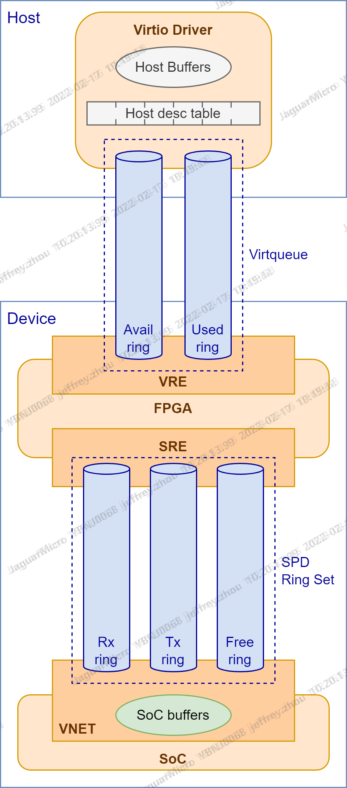

virtqueue设置原则
根据数据驱动的方向设置virtqueue数量，不同的数据驱动方向需要单独的virtqueue。比如：
vnet设备的rx方向，由后端设备收包驱动数据流向，数据由后端触发，发往前端（需要前端预先准备好空闲buffers提供给后端），需要独立的virtqueue；
vnet设备的tx方向，由前端发包请求驱动数据流向，数据由前端触发，发往后端（后端处理完后把空闲buffers还给前端），需要独立的virtqueue，不能和rx方向复用（否则如果和rx方向复用的话，available ring中会装满rx需要使用的host侧空闲buffers，待发送数据buffers就无法有效传递到设备侧）；
vblk设备的in和out操作，都是由前端发起请求驱动数据流向，数据由前端触发，发往后端（请求headers，和in请求的空闲buffers，以及out请求的待发送数据buffers），后端处理完之后还给前端（响应headers，和in请求的已读取数据buffers，以及out请求的空闲buffers），完成一个数据循环，所以只需要一个virtqueue，in和out可以复用。
virtqueue概念
virtqueue是数据流向&流程的逻辑抽象，主要包括数据传递的发起方向、空闲host buffers的分配或回收、数据host buffers的传递、任务通知等方面。
virtqueue的概念经过抽象，主要包含如下几个方面：
host buffers的传递通道（available ring & used ring）
available ring：net rx场景，host用来向设备发放空闲host buffers，必须提前发放，设备按需去取；net tx场景，host用来向设备发放数据host buffers，设备应该立刻取走发送。
used ring：net rx场景，设备用来向host发送数据host buffers，即收到的数据包；net tx场景，设备用来向host归还空闲host buffers。
通知机制（kick & irq）
kick：net rx场景，host用来通知设备准备好了空闲buffers；net tx场景，host用来通知设备有待发送数据包。
irq：net rx场景，设备用来通知host有新收到的数据包；net tx场景，设备用来通知host发送任务完成，归还空闲host buffers。
数据传递的发起方向（host发起 or device发起），用来决定需不需要设置单独的virtqueue
virtqueue不关心host buffers传递到设备后，设备具体如何处理。不同的设备拿到host buffers之后，有自己私有的实现方式。
spd rings概念
spd rings是fpga实现具体IO任务的方式。host通过virtqueue把空闲和数据buffers传递到fpga，但真正的数据接收或发送任务是在soc完成，涉及host buffers和soc buffers之间的数据传递及通知，fpga使用spd rings实现这些具体功能。
对应关系
每条virtqueue（包含available ring & used ring）对应一套spd rings（包含rx ring、tx ring和free ring），对应关系如下图所示：

下面按具体场景分析virtqueue和spd rings如何配合工作
net rx
1 | virtio_dev >> show queue info 577 0 |
要点说明：
net rx场景，spd rings中的free ring不会使用，只用到tx ring和rx ring
host提前把host free buffers的idxes放入virtqueue的available ring，发送给fpga，供收到数据包时使用
fpga取出，获取每个host free buffers的paddr，构造tx messages（同时会记录idxes），放入tx ring发送给soc，供soc收到数据包时使用
soc的dpdk app从外部网络端口收到数据包后，从tx ring获取host free buffers，结合soc收包mbufs的paddr构造rx messages，放入rx ring
fpga从rx ring获取rx messages，执行数据搬移任务，将数据包从soc mbufs搬移到host free buffers，将当前数据包的host buffers的idxes（一直记录在spd ring tx&rx messages中传递）放入virtqueue的used ring，通知host取包
数据搬移完成后，soc可以从rx ring的tail指针变化感知，此时可以释放soc的mbufs
host择机再次把host free buffers的idxes放入virtqueue的available ring，发送给fpga，供下次收到数据包时使用
net tx
1 | virtio_dev >> show queue info 577 1 |
要点说明：
net tx场景，spd rings中的rx ring不会使用，只用到tx ring和free ring
soc提前将空闲的soc mbufs放入free ring，供fpga收到发包任务时使用
host发起发包任务，填写待发送数据包的buffers，并把这些buffers的idxes放入virtqueue的available ring，发往fpga
fpga取出，并获取这些待发送数据包host buffers的paddr，再从free ring中取出soc free mbufs，直接执行数据搬移操作，将数据从host buffers搬移到soc mbufs中，搬移完成后将soc mbufs放入tx ring发往soc，并将host buffers的idxes放入virtqueue的uesd ring归还给host
soc从tx ring获取到待发送数据包的soc mbufs，执行发包操作，发送完成后将soc mbufs释放
soc择机将空闲的soc mbufs再次注入free ring，供fpga下次收到发包任务时继续使用
blk in&out

1 | virtio_dev >> show queue info 66 0 |
要点说明：
blk in&out场景，所有spd rings都会被用到（blk只给出数据的流向示意，不涉及soc vblk具体处理）
blk in&out操作均有host发起，in请求将请求headers和空闲buffers发往设备，接收响应headers和数据buffers；out请求将请求headers和数据buffers发往设备，接收响应headers和空闲buffers；in&out请求可以同时在同一个virtqueue发送
in操作（图中绿色箭头路线），参考net rx流程，主要差别是增加了对request headers和response headers的处理（未画出），tx ring复用了tx soc data buffers和rx host free buffers的发送，以及数据流向由host驱动
out操作（图中蓝色箭头路线），参考net tx流程，主要差别是增加了对request headers和response headers的处理（未画出），以及tx ring复用了tx soc data buffers和rx host free buffers的发送